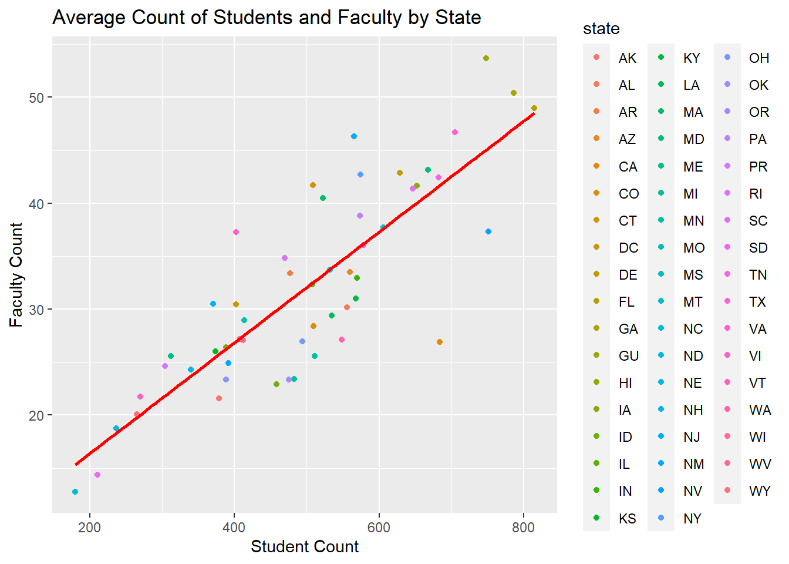

library(tidyverse)
library(ggplot2)
knitr::opts_chunk$set(echo = TRUE, warning=FALSE, message=FALSE)Challenge 5: Public Schools Visualization
laurenzichittella
challenge_5
public_schools
Introduction to Visualization
Description Of Public Schools Characteristics, 2017-2017
This dataset provides characteristics on public schools, their students and teachers, in the US as of the 2017-2018 school year.
Please see steps below for steps to preparing this data for unvariate and by variate visualizations
Code Section 1 - Read in data Public School Characteristic
Read in a data set Public_School_Characteristics_2017-18.csv
After Review this data outside of R prior to import, it’s clear this is a wide dataset with plenty of variables.For the sake of efficiency in this exercise, this dataset will be limited to variables and observations that can be used to study the association between student in primary and secondary schools by state, charter status, and magnet status.
Steps
- Read in dataset, limit variables to those that will be utilized to filter observations and create visualizations
- Describe data to inform additional filtering or selection of variables that remains prior to tidying
- Create new variable representing ratio of students to teachers
# Read in Public Schools Characteristics Dataset
# import data
publicschool_char_raw <-read_csv("_data/Public_School_Characteristics_2017-18.csv")
# get full list of column names
colnames(publicschool_char_raw) [1] "X" "Y" "OBJECTID" "NCESSCH"
[5] "NMCNTY" "SURVYEAR" "STABR" "LEAID"
[9] "ST_LEAID" "LEA_NAME" "SCH_NAME" "LSTREET1"
[13] "LSTREET2" "LSTREET3" "LCITY" "LSTATE"
[17] "LZIP" "LZIP4" "PHONE" "GSLO"
[21] "GSHI" "VIRTUAL" "TOTFRL" "FRELCH"
[25] "REDLCH" "PK" "KG" "G01"
[29] "G02" "G03" "G04" "G05"
[33] "G06" "G07" "G08" "G09"
[37] "G10" "G11" "G12" "G13"
[41] "TOTAL" "MEMBER" "AM" "HI"
[45] "BL" "WH" "HP" "TR"
[49] "FTE" "LATCOD" "LONCOD" "ULOCALE"
[53] "STUTERATIO" "STITLEI" "AMALM" "AMALF"
[57] "ASALM" "ASALF" "HIALM" "HIALF"
[61] "BLALM" "BLALF" "WHALM" "WHALF"
[65] "HPALM" "HPALF" "TRALM" "TRALF"
[69] "TOTMENROL" "TOTFENROL" "STATUS" "UG"
[73] "AE" "SCHOOL_TYPE_TEXT" "SY_STATUS_TEXT" "SCHOOL_LEVEL"
[77] "AS" "CHARTER_TEXT" "MAGNET_TEXT" # select columns to id school, state, enrollment, staff, and other types of status
publicschool_nvars <-
publicschool_char_raw %>%
select (NCESSCH, LSTATE, PK, KG, G01, G02, G03, G04, G05, G06, G07, G08, G09, G10, G11, G12, TOTAL, FTE, SCHOOL_TYPE_TEXT, SY_STATUS_TEXT, SCHOOL_LEVEL, CHARTER_TEXT, MAGNET_TEXT)
# confirm successful selection of vars
colnames(publicschool_nvars) [1] "NCESSCH" "LSTATE" "PK" "KG"
[5] "G01" "G02" "G03" "G04"
[9] "G05" "G06" "G07" "G08"
[13] "G09" "G10" "G11" "G12"
[17] "TOTAL" "FTE" "SCHOOL_TYPE_TEXT" "SY_STATUS_TEXT"
[21] "SCHOOL_LEVEL" "CHARTER_TEXT" "MAGNET_TEXT" head(publicschool_nvars)# A tibble: 6 × 23
NCESSCH LSTATE PK KG G01 G02 G03 G04 G05 G06 G07 G08
<chr> <chr> <dbl> <dbl> <dbl> <dbl> <dbl> <dbl> <dbl> <dbl> <dbl> <dbl>
1 0200510004… AK 30 81 63 80 62 58 73 NA NA NA
2 0200610004… AK NA NA NA NA NA NA NA NA NA NA
3 0200390004… AK NA 23 23 27 22 25 28 19 NA NA
4 0200390004… AK NA 40 43 42 46 46 43 NA NA NA
5 0200390005… AK NA NA NA NA NA NA NA NA 0 1
6 0200700005… AK 0 0 3 1 2 2 2 1 5 1
# … with 11 more variables: G09 <dbl>, G10 <dbl>, G11 <dbl>, G12 <dbl>,
# TOTAL <dbl>, FTE <dbl>, SCHOOL_TYPE_TEXT <chr>, SY_STATUS_TEXT <chr>,
# SCHOOL_LEVEL <chr>, CHARTER_TEXT <chr>, MAGNET_TEXT <chr> # quick summary to inform whether to filter observations
print(summarytools::dfSummary(publicschool_nvars,
plain.ascii = FALSE,
style = "grid",
graph.magnif = 0.70, ),
method = 'render',
table.classes = 'table-condensed')Data Frame Summary
publicschool_nvars
Dimensions: 100729 x 23Duplicates: 0
| No | Variable | Stats / Values | Freqs (% of Valid) | Graph | Valid | Missing | |||||||||||||||||||||||||||||||||||||||||||||||||||||||
|---|---|---|---|---|---|---|---|---|---|---|---|---|---|---|---|---|---|---|---|---|---|---|---|---|---|---|---|---|---|---|---|---|---|---|---|---|---|---|---|---|---|---|---|---|---|---|---|---|---|---|---|---|---|---|---|---|---|---|---|---|---|
| 1 | NCESSCH [character] |
|
|
 |
100729 (100.0%) | 0 (0.0%) | |||||||||||||||||||||||||||||||||||||||||||||||||||||||
| 2 | LSTATE [character] |
|
|
 |
100729 (100.0%) | 0 (0.0%) | |||||||||||||||||||||||||||||||||||||||||||||||||||||||
| 3 | PK [numeric] |
|
468 distinct values |  |
36108 (35.8%) | 64621 (64.2%) | |||||||||||||||||||||||||||||||||||||||||||||||||||||||
| 4 | KG [numeric] |
|
393 distinct values |  |
57045 (56.6%) | 43684 (43.4%) | |||||||||||||||||||||||||||||||||||||||||||||||||||||||
| 5 | G01 [numeric] |
|
353 distinct values |  |
57396 (57.0%) | 43333 (43.0%) | |||||||||||||||||||||||||||||||||||||||||||||||||||||||
| 6 | G02 [numeric] |
|
345 distinct values |  |
57461 (57.0%) | 43268 (43.0%) | |||||||||||||||||||||||||||||||||||||||||||||||||||||||
| 7 | G03 [numeric] |
|
358 distinct values |  |
57476 (57.1%) | 43253 (42.9%) | |||||||||||||||||||||||||||||||||||||||||||||||||||||||
| 8 | G04 [numeric] |
|
382 distinct values |  |
57259 (56.8%) | 43470 (43.2%) | |||||||||||||||||||||||||||||||||||||||||||||||||||||||
| 9 | G05 [numeric] |
|
494 distinct values |  |
56056 (55.7%) | 44673 (44.3%) | |||||||||||||||||||||||||||||||||||||||||||||||||||||||
| 10 | G06 [numeric] |
|
641 distinct values |  |
42144 (41.8%) | 58585 (58.2%) | |||||||||||||||||||||||||||||||||||||||||||||||||||||||
| 11 | G07 [numeric] |
|
687 distinct values |  |
37047 (36.8%) | 63682 (63.2%) | |||||||||||||||||||||||||||||||||||||||||||||||||||||||
| 12 | G08 [numeric] |
|
700 distinct values |  |
37280 (37.0%) | 63449 (63.0%) | |||||||||||||||||||||||||||||||||||||||||||||||||||||||
| 13 | G09 [numeric] |
|
987 distinct values |  |
32230 (32.0%) | 68499 (68.0%) | |||||||||||||||||||||||||||||||||||||||||||||||||||||||
| 14 | G10 [numeric] |
|
945 distinct values |  |
32023 (31.8%) | 68706 (68.2%) | |||||||||||||||||||||||||||||||||||||||||||||||||||||||
| 15 | G11 [numeric] |
|
914 distinct values |  |
32009 (31.8%) | 68720 (68.2%) | |||||||||||||||||||||||||||||||||||||||||||||||||||||||
| 16 | G12 [numeric] |
|
891 distinct values |  |
31915 (31.7%) | 68814 (68.3%) | |||||||||||||||||||||||||||||||||||||||||||||||||||||||
| 17 | TOTAL [numeric] |
|
2945 distinct values |  |
98500 (97.8%) | 2229 (2.2%) | |||||||||||||||||||||||||||||||||||||||||||||||||||||||
| 18 | FTE [numeric] |
|
10066 distinct values |  |
95496 (94.8%) | 5233 (5.2%) | |||||||||||||||||||||||||||||||||||||||||||||||||||||||
| 19 | SCHOOL_TYPE_TEXT [character] |
|
|
 |
100729 (100.0%) | 0 (0.0%) | |||||||||||||||||||||||||||||||||||||||||||||||||||||||
| 20 | SY_STATUS_TEXT [character] |
|
|
 |
100729 (100.0%) | 0 (0.0%) | |||||||||||||||||||||||||||||||||||||||||||||||||||||||
| 21 | SCHOOL_LEVEL [character] |
|
|
 |
100729 (100.0%) | 0 (0.0%) | |||||||||||||||||||||||||||||||||||||||||||||||||||||||
| 22 | CHARTER_TEXT [character] |
|
|
 |
100729 (100.0%) | 0 (0.0%) | |||||||||||||||||||||||||||||||||||||||||||||||||||||||
| 23 | MAGNET_TEXT [character] |
|
|
 |
100729 (100.0%) | 0 (0.0%) |
Generated by summarytools 1.0.1 (R version 4.2.2)
2023-03-28
#remove observations to limit to schools that are currently operational
publicschool_nvars_oper <-
publicschool_nvars %>%
filter(SY_STATUS_TEXT == "Currently operational")
#sanity checks
table(publicschool_nvars_oper$SY_STATUS_TEXT)
Currently operational
98557 # investigate observations where missing student or faculty counts
summary(publicschool_nvars_oper$TOTAL) Min. 1st Qu. Median Mean 3rd Qu. Max. NA's
0.0 249.0 436.0 518.5 655.0 14286.0 1287 summary(publicschool_nvars_oper$FTE) Min. 1st Qu. Median Mean 3rd Qu. Max. NA's
0.00 17.26 27.79 32.74 41.00 1419.00 4189 missing_students <-
publicschool_nvars_oper %>%
filter(is.na(TOTAL))
head(missing_students)# A tibble: 6 × 23
NCESSCH LSTATE PK KG G01 G02 G03 G04 G05 G06 G07 G08
<chr> <chr> <dbl> <dbl> <dbl> <dbl> <dbl> <dbl> <dbl> <dbl> <dbl> <dbl>
1 0101410018… AL NA NA NA NA NA NA NA NA NA NA
2 0100480006… AL NA NA NA NA NA NA NA NA NA NA
3 0100510006… AL NA NA NA NA NA NA NA NA NA NA
4 0100630007… AL NA NA NA NA NA NA NA NA NA NA
5 0100780007… AL NA NA NA NA NA NA NA NA NA NA
6 0100900007… AL NA NA NA NA NA NA NA NA NA NA
# … with 11 more variables: G09 <dbl>, G10 <dbl>, G11 <dbl>, G12 <dbl>,
# TOTAL <dbl>, FTE <dbl>, SCHOOL_TYPE_TEXT <chr>, SY_STATUS_TEXT <chr>,
# SCHOOL_LEVEL <chr>, CHARTER_TEXT <chr>, MAGNET_TEXT <chr> summary(missing_students$FTE) Min. 1st Qu. Median Mean 3rd Qu. Max. NA's
0.0000 0.0925 4.0150 7.3210 11.0000 60.4000 623 missing_teachers <-
publicschool_nvars_oper %>%
filter(is.na(FTE))
head(missing_teachers)# A tibble: 6 × 23
NCESSCH LSTATE PK KG G01 G02 G03 G04 G05 G06 G07 G08
<chr> <chr> <dbl> <dbl> <dbl> <dbl> <dbl> <dbl> <dbl> <dbl> <dbl> <dbl>
1 0101410018… AL NA NA NA NA NA NA NA NA NA NA
2 0100510006… AL NA NA NA NA NA NA NA NA NA NA
3 0100960008… AL NA NA NA NA NA NA NA NA NA NA
4 0101140008… AL NA NA NA NA NA NA NA NA NA NA
5 0101140008… AL NA NA NA NA NA NA NA NA NA NA
6 0101350008… AL NA NA NA NA NA NA NA NA NA NA
# … with 11 more variables: G09 <dbl>, G10 <dbl>, G11 <dbl>, G12 <dbl>,
# TOTAL <dbl>, FTE <dbl>, SCHOOL_TYPE_TEXT <chr>, SY_STATUS_TEXT <chr>,
# SCHOOL_LEVEL <chr>, CHARTER_TEXT <chr>, MAGNET_TEXT <chr> summary(missing_teachers$TOTAL) Min. 1st Qu. Median Mean 3rd Qu. Max. NA's
0.0 5.0 132.0 307.0 497.8 5683.0 623 # Since it doesn't make much sense for a school to not have students or teachers observations where either faculty or student counts are missing, filter these observations
# Also it will make the most sense to evaluate the relationship of student to staff in primary and secondary schools only
publicschool_pretidy <-
publicschool_nvars_oper %>%
filter(!is.na(FTE)|!is.na(TOTAL))
table(publicschool_nvars_oper$SCHOOL_LEVEL)
Adult Education Elementary High Middle Not Applicable
26 52752 22685 16291 744
Not Reported Other Prekindergarten Secondary Ungraded
300 3727 1338 537 157 publicschool_pretidy <-
publicschool_pretidy %>%
filter(SCHOOL_LEVEL %in% c("Elementary", "High", "Middle", "Secondary"))
table(publicschool_pretidy$SCHOOL_LEVEL)
Elementary High Middle Secondary
52745 22606 16289 537 #sanity check
print(summarytools::dfSummary(publicschool_pretidy,
plain.ascii = FALSE,
style = "grid",
graph.magnif = 0.70, ),
method = 'render',
table.classes = 'table-condensed') Data Frame Summary
publicschool_pretidy
Dimensions: 92177 x 23Duplicates: 0
| No | Variable | Stats / Values | Freqs (% of Valid) | Graph | Valid | Missing | |||||||||||||||||||||||||||||||||||||||||||||||||||||||
|---|---|---|---|---|---|---|---|---|---|---|---|---|---|---|---|---|---|---|---|---|---|---|---|---|---|---|---|---|---|---|---|---|---|---|---|---|---|---|---|---|---|---|---|---|---|---|---|---|---|---|---|---|---|---|---|---|---|---|---|---|---|
| 1 | NCESSCH [character] |
|
|
 |
92177 (100.0%) | 0 (0.0%) | |||||||||||||||||||||||||||||||||||||||||||||||||||||||
| 2 | LSTATE [character] |
|
|
 |
92177 (100.0%) | 0 (0.0%) | |||||||||||||||||||||||||||||||||||||||||||||||||||||||
| 3 | PK [numeric] |
|
315 distinct values |  |
32980 (35.8%) | 59197 (64.2%) | |||||||||||||||||||||||||||||||||||||||||||||||||||||||
| 4 | KG [numeric] |
|
382 distinct values |  |
53020 (57.5%) | 39157 (42.5%) | |||||||||||||||||||||||||||||||||||||||||||||||||||||||
| 5 | G01 [numeric] |
|
339 distinct values |  |
53274 (57.8%) | 38903 (42.2%) | |||||||||||||||||||||||||||||||||||||||||||||||||||||||
| 6 | G02 [numeric] |
|
333 distinct values |  |
53313 (57.8%) | 38864 (42.2%) | |||||||||||||||||||||||||||||||||||||||||||||||||||||||
| 7 | G03 [numeric] |
|
349 distinct values |  |
53271 (57.8%) | 38906 (42.2%) | |||||||||||||||||||||||||||||||||||||||||||||||||||||||
| 8 | G04 [numeric] |
|
375 distinct values |  |
52936 (57.4%) | 39241 (42.6%) | |||||||||||||||||||||||||||||||||||||||||||||||||||||||
| 9 | G05 [numeric] |
|
487 distinct values |  |
51724 (56.1%) | 40453 (43.9%) | |||||||||||||||||||||||||||||||||||||||||||||||||||||||
| 10 | G06 [numeric] |
|
637 distinct values |  |
37794 (41.0%) | 54383 (59.0%) | |||||||||||||||||||||||||||||||||||||||||||||||||||||||
| 11 | G07 [numeric] |
|
684 distinct values |  |
32730 (35.5%) | 59447 (64.5%) | |||||||||||||||||||||||||||||||||||||||||||||||||||||||
| 12 | G08 [numeric] |
|
693 distinct values |  |
32964 (35.8%) | 59213 (64.2%) | |||||||||||||||||||||||||||||||||||||||||||||||||||||||
| 13 | G09 [numeric] |
|
983 distinct values |  |
27976 (30.4%) | 64201 (69.6%) | |||||||||||||||||||||||||||||||||||||||||||||||||||||||
| 14 | G10 [numeric] |
|
938 distinct values |  |
27874 (30.2%) | 64303 (69.8%) | |||||||||||||||||||||||||||||||||||||||||||||||||||||||
| 15 | G11 [numeric] |
|
908 distinct values |  |
27919 (30.3%) | 64258 (69.7%) | |||||||||||||||||||||||||||||||||||||||||||||||||||||||
| 16 | G12 [numeric] |
|
885 distinct values |  |
27877 (30.2%) | 64300 (69.8%) | |||||||||||||||||||||||||||||||||||||||||||||||||||||||
| 17 | TOTAL [numeric] |
|
2906 distinct values |  |
92077 (99.9%) | 100 (0.1%) | |||||||||||||||||||||||||||||||||||||||||||||||||||||||
| 18 | FTE [numeric] |
|
9938 distinct values |  |
89244 (96.8%) | 2933 (3.2%) | |||||||||||||||||||||||||||||||||||||||||||||||||||||||
| 19 | SCHOOL_TYPE_TEXT [character] |
|
|
 |
92177 (100.0%) | 0 (0.0%) | |||||||||||||||||||||||||||||||||||||||||||||||||||||||
| 20 | SY_STATUS_TEXT [character] | 1. Currently operational |
|
 |
92177 (100.0%) | 0 (0.0%) | |||||||||||||||||||||||||||||||||||||||||||||||||||||||
| 21 | SCHOOL_LEVEL [character] |
|
|
 |
92177 (100.0%) | 0 (0.0%) | |||||||||||||||||||||||||||||||||||||||||||||||||||||||
| 22 | CHARTER_TEXT [character] |
|
|
 |
92177 (100.0%) | 0 (0.0%) | |||||||||||||||||||||||||||||||||||||||||||||||||||||||
| 23 | MAGNET_TEXT [character] |
|
|
 |
92177 (100.0%) | 0 (0.0%) |
Generated by summarytools 1.0.1 (R version 4.2.2)
2023-03-28
Code Section 2 - Tidy dataset
Steps
- Mutate to create indicators for magnet and charter schools (.= unknown, 1= true, 0=false)
- Mutate to create school level with two categories: primary (elementary) & secondary (middle, high school, secondar school)
- Select only variables needed for analysis
- Tidy dataset to create one observation for measure: student count, teacher count
# Mutate CHARTER_TEXT to create indicator variable
publicschool_pretidy2<-
publicschool_pretidy %>%
mutate(charter_ind = if_else(CHARTER_TEXT== "Yes", 1,
if_else(CHARTER_TEXT== "No", 0, 9)))
#sanity check
table(publicschool_pretidy2$CHARTER_TEXT, publicschool_pretidy2$charter_ind, useNA="ifany")
0 1 9
No 80634 0 0
Not Applicable 0 0 5738
Yes 0 5805 0# Mutate MAGNET_TEXT to indicator variable
publicschool_pretidy2<-
publicschool_pretidy2 %>%
mutate(magnet_ind = if_else(MAGNET_TEXT== "Yes", 1,
if_else(MAGNET_TEXT== "No", 0, 9)))
#sanity check
table(publicschool_pretidy2$MAGNET_TEXT, publicschool_pretidy2$magnet_ind, useNA="ifany")
0 1 9
Missing 0 0 5671
No 71179 0 0
Not Applicable 0 0 12022
Yes 0 3305 0# Mutate SCHOOL_LEVEL to indicator variable
publicschool_pretidy2<-
publicschool_pretidy2 %>%
mutate(level = if_else(SCHOOL_LEVEL== "Elementary", 'primary', 'secondary'))
# sanity check
table(publicschool_pretidy2$level, useNA="ifany")
primary secondary
52745 39432 # Remove school string from SCHOOL_TYPE_TEXT
publicschool_pretidy2<-
publicschool_pretidy2 %>%
mutate(school_type = str_remove(SCHOOL_TYPE_TEXT, 'school'))
# sanity check
table(publicschool_pretidy2$school_type, publicschool_pretidy2$SCHOOL_TYPE_TEXT,useNA="ifany")
Alternative/other school Regular school
Alternative/other 3975 0
Regular 0 86522
Special education 0 0
Vocational 0 0
Special education school Vocational school
Alternative/other 0 0
Regular 0 0
Special education 627 0
Vocational 0 1053# Rename variables to get more descriptive name prior to pivot
publicschool_pretidy2 <-
publicschool_pretidy2 %>%
rename( "total_students" = "TOTAL"
, "total_faculty" = "FTE"
, "state" = "LSTATE"
, "school_id" = "NCESSCH")
colnames(publicschool_pretidy2) [1] "school_id" "state" "PK" "KG"
[5] "G01" "G02" "G03" "G04"
[9] "G05" "G06" "G07" "G08"
[13] "G09" "G10" "G11" "G12"
[17] "total_students" "total_faculty" "SCHOOL_TYPE_TEXT" "SY_STATUS_TEXT"
[21] "SCHOOL_LEVEL" "CHARTER_TEXT" "MAGNET_TEXT" "charter_ind"
[25] "magnet_ind" "level" "school_type" # Calculate ratio
publicschool_pretidy2 <-
publicschool_pretidy2 %>%
mutate(ratio_student_faculty = total_students/total_faculty)
colnames(publicschool_pretidy2) [1] "school_id" "state" "PK"
[4] "KG" "G01" "G02"
[7] "G03" "G04" "G05"
[10] "G06" "G07" "G08"
[13] "G09" "G10" "G11"
[16] "G12" "total_students" "total_faculty"
[19] "SCHOOL_TYPE_TEXT" "SY_STATUS_TEXT" "SCHOOL_LEVEL"
[22] "CHARTER_TEXT" "MAGNET_TEXT" "charter_ind"
[25] "magnet_ind" "level" "school_type"
[28] "ratio_student_faculty"# Limit to analysis variables and values
publicschool_pretidy2<-
publicschool_pretidy2 %>%
select("school_id", "state", "level", "school_type", "magnet_ind", "charter_ind", "total_students", "total_faculty", "ratio_student_faculty")
head(publicschool_pretidy2)# A tibble: 6 × 9
school_id state level school_…¹ magne…² chart…³ total…⁴ total…⁵ ratio…⁶
<chr> <chr> <chr> <chr> <dbl> <dbl> <dbl> <dbl> <dbl>
1 020051000480 AK primary "Regular… 0 0 447 24.9 18.0
2 020061000470 AK secondary "Alterna… 0 0 30 3 10
3 020039000448 AK primary "Regular… 0 1 167 10.4 16.1
4 020039000463 AK primary "Regular… 0 1 260 16.8 15.5
5 020039000513 AK secondary "Alterna… 0 0 5 0.670 7.46
6 020072000340 AK primary "Regular… 0 0 217 13.5 16.1
# … with abbreviated variable names ¹school_type, ²magnet_ind, ³charter_ind,
# ⁴total_students, ⁵total_faculty, ⁶ratio_student_faculty# pivot data to tidy by creating variables type of total (student versus faculty) and actual total (n)
publicschool_tidy <-
publicschool_pretidy2 %>%
pivot_longer( cols = c("total_students", "total_faculty", "ratio_student_faculty"),
names_to = "measure_type" )
#sanity checks
colnames(publicschool_tidy)[1] "school_id" "state" "level" "school_type" "magnet_ind"
[6] "charter_ind" "measure_type" "value" print(summarytools::dfSummary(publicschool_tidy,
plain.ascii = FALSE,
style = "grid",
graph.magnif = 0.70, ),
method = 'render',
table.classes = 'table-condensed') Data Frame Summary
publicschool_tidy
Dimensions: 276531 x 8Duplicates: 0
| No | Variable | Stats / Values | Freqs (% of Valid) | Graph | Valid | Missing | |||||||||||||||||||||||||||||||||||||||||||||||||||||||
|---|---|---|---|---|---|---|---|---|---|---|---|---|---|---|---|---|---|---|---|---|---|---|---|---|---|---|---|---|---|---|---|---|---|---|---|---|---|---|---|---|---|---|---|---|---|---|---|---|---|---|---|---|---|---|---|---|---|---|---|---|---|
| 1 | school_id [character] |
|
|
 |
276531 (100.0%) | 0 (0.0%) | |||||||||||||||||||||||||||||||||||||||||||||||||||||||
| 2 | state [character] |
|
|
 |
276531 (100.0%) | 0 (0.0%) | |||||||||||||||||||||||||||||||||||||||||||||||||||||||
| 3 | level [character] |
|
|
 |
276531 (100.0%) | 0 (0.0%) | |||||||||||||||||||||||||||||||||||||||||||||||||||||||
| 4 | school_type [character] |
|
|
 |
276531 (100.0%) | 0 (0.0%) | |||||||||||||||||||||||||||||||||||||||||||||||||||||||
| 5 | magnet_ind [numeric] |
|
|
 |
276531 (100.0%) | 0 (0.0%) | |||||||||||||||||||||||||||||||||||||||||||||||||||||||
| 6 | charter_ind [numeric] |
|
|
 |
276531 (100.0%) | 0 (0.0%) | |||||||||||||||||||||||||||||||||||||||||||||||||||||||
| 7 | measure_type [character] |
|
|
 |
276531 (100.0%) | 0 (0.0%) | |||||||||||||||||||||||||||||||||||||||||||||||||||||||
| 8 | value [numeric] |
|
79293 distinct values |  |
270152 (97.7%) | 6379 (2.3%) |
Generated by summarytools 1.0.1 (R version 4.2.2)
2023-03-28
Univariate Visualizations
I’m using this exercise more to figure out ggplot than the dataset hence very simple choices in what is being displayed.
This plot shows the total count of schools per state stacked by level
library(ggplot2)
# isolate ratio
publicschool_ratio <-
publicschool_tidy %>%
filter(school_type == "Regular " & measure_type == "ratio_student_faculty" & !is.na(value))
# group to get mean per categories
publicschools_ratio_grouped <-
publicschool_ratio %>%
group_by(state, level)%>%
summarise(n_schools = n(),
mean_value = mean(value),
med_value = median(value))%>%
arrange(state, level )
# Stacked
ggplot(publicschools_ratio_grouped, aes(fill=level, y=n_schools, x=state)) +
geom_bar(position="stack", stat="identity") +
ggtitle("Count of Schools by State and Education Level with Student and Faculty")+
labs(y = "School Count", x = "State", colour = "Education Level")+
theme(axis.text.x = element_text(angle = 90))
Bivariate Visualization(s)
For sake of simplicity, will evaluate the relationship of students to faculty via scatter plot, grouping data my school to get the mean of both to make the graph less busy
# isolate totals
publicschool_totals <-
publicschool_tidy %>%
filter(school_type == "Regular " & measure_type == "total_students"& !is.na(value)|measure_type == "total_faculty"&!is.na(value))
publicschools_totals_grouped <-
publicschool_totals %>%
group_by(state, measure_type)%>%
summarise( mean_value = mean(value) )%>%
arrange(state, measure_type)
# pivot wide to plot student n by faculty b
publicschool_totals_wide <-
publicschools_totals_grouped %>%
pivot_wider(names_from = measure_type, values_from = mean_value)
publicschool_plot_wide <-
publicschool_totals_wide %>%
filter(!is.na(total_students)&!is.na(total_faculty))
#scatter student n by faculty b, color by state
ggplot(publicschool_plot_wide, aes(x=total_students, y=total_faculty, color = state)) + geom_point()+
geom_smooth(method=lm , color="red", se=FALSE)+
ggtitle("Average Count of Students and Faculty by State") +
labs(x = "Student Count", y = "Faculty Count")